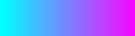
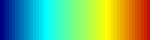
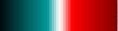
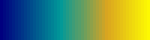
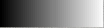

|
v1.3.10
|
Loading...
Searching...
No Matches
|
v1.3.10
|

| Dependencies | X11/xorg (Mac/Linux) |
|---|---|
| CMakeLists.txt | set( PLUGINS "visualizer" ) |
| Header File | #include "Visualizer.h" |
| Class | Visualizer |
| Package | |||
|---|---|---|---|
| X11/xorg | $ brew install Caskroom/cask/xquartz | Debian/Ubuntu:$ sudo apt-get install libx11-dev xorg-dev libgl1-mesa-dev libglu1-mesa-dev libxrandr-dev | None (if using Visual Studio) |
This plugin facilitates visualization of model geometry and data. It can visualize a number of different geometric shapes, including all of the primitive types supported by the Helios context. Individual geometric objects can be added though API commands, and there is a command to automatically add all geometric primitives from the Helios context.
| Constructors |
|---|
| Visualizer( uint Wdisplay ) |
| Visualizer( uint Wdisplay, uint Hdisplay ) |
The class associated with the visualization is called Visualizer. The class constructor takes one or two arguments that specifies the size of the graphics window. If only one argument is provided (see Visualizer( uint Wdisplay )), the argument is an integer that specifies the width of the diplay window in pixels, with the hight of the window specified according to the default aspect ratio. If two arguments are provided (see Visualizer( uint Wdisplay, uint Hdisplay )), the two arguments correspond respectively to the width and height of the display window in pixels. Below is an example program:
#include "Visualizer.h"
int main( void ){
Visualizer vis( 1200 ); //Opens a graphics window of width 1200 pixels with default aspect ratio
}The visualizer uses two types of coordinate systems to specify the locations of points in space during visualization:
In order to actually display a window for visualization, we must issue a comand to plot the geometry. There are different comands to produce a visualization window depending on the intended output:
If plotUpdate() is issued, another command printWindow() can be used to output the current visualization to file (JPEG files only).
The current window can be closed using the closeWindow() command.
Below is an example of opening a window (blank), exporting its contents to file, then closing the window:
#include "Visualizer.h"
int main( void ){
Visualizer vis( 1200 );
vis.plotUpdate(); //we have not added geometry, so window is blank
vis.printWindow("blank_window.jpg");
vis.closeWindow();
}The window background can be set to a constant color via the command setBackgroundColor( RGBcolor color ). Alternatively, a three-dimensional ‘sky’ background can be set using the addSkyDomeByCenter command. This adds a hemispherical dome with a sky texture image mapped to its surface. The default sky texture is ‘SkyDome_clouds.jpg’ located in the plugins/visualizer/textures directory. The following example shows how to add a sky dome:
#include "Visualizer.h"
int main( void ){
Visualizer vis( 1200 );
vis.addSkyDomeByCenter( 100, make_vec3(0,0,0), 20, "plugins/visualizer/textures/SkyDome_clouds.jpg", 0 );
}In the example, we have created a sky dome with a radius of 100 centered at the origin (0,0,0), 20 divisions in the spherical coordinate directions (elevation,azimuth), and on layer 0.
Next, we will learn how to add objects to the visualization. The visualizer supports the following objects:
| Primitive | Description | Add Functions |
|---|---|---|
| Rectangle | Rectangular polygon with coplanar vertices. |
|
| Triangle | Triangular polygon specified by its three vertices. |
|
| Disk | Ellipsoidal disk. |
|
| Voxel | Parallelpiped or rectangular prism. |
|
| Sphere | Tessellated sphere composed of triangles. |
|
| Line | Linear segment between two points. |
|
| Textbox | Box of text. |
|
Each object can be added by calling one of the associated functions listed in the table above. The syntax is usually fairly similar to how gometry is added in the Helios context, except that you must specify a coordinate system (see Coordinate Systems).
The code sample below gives an example of how to add a horizontal rectangle to the visualizer by providing the coordinates of its center:
#include "Visualizer.h"
int main( void ){
Visualizer vis( 1200 );
vec3 center = make_vec3(0,0,0);
vec2 size = make_vec2(1,1);
SphericalCoord rotation = make_SphericalCoord(0,0);
vis.addRectangleByCenter(center,size,rotation,RGB::red,Visualizer::COORDINATES_CARTESIAN);
}The visualizer can automatically import some or all geometry from the Context. This is accomplished using the buildContextGeometry command. To add all primitives in the Context, the buildContextGeometry command would be issued, which is passed the Context. We can add a subset of the Context geometry through an additional argument which takes a vector of UUID's.
| Command | Description |
|---|---|
| buildContextGeometry( Context* context ) | Add all primitives in the Context to the Visualizer. |
| buildContextGeometry( Context* context, std::vector<uint> UUIDs ) | Add a subset of primitives in the Context to the Visualizer. |
The example below shows how to add all Context geometry to the visualizer.
#include "Context.h"
#include "Visualizer.h"
using namespace helios;
int main( void ){
Context context;
vec3 center = make_vec3(0,0,0);
vec2 size = make_vec2(1,1);
context.addPatch(center,size);
Visualizer vis( 1200 );
vis.buildContextGeometry(&context);
}To this point, we have not actually plotted anything in the Visualizer window. A final command is neede to display all of the geometry added to the Visualizer in the window we have opened. There are two functions for doing this, which are detailed below.
The plotInteractive() function can be used to generate an interactive plot of the geometry in the Visualizer. This means that the code will pause to produce the plot/visualization until the window is closed by the user. The user can interact with the plot by issuing keystrokes to, e.g., zoom. An example is given below to generate an interactive plot.
#include "Context.h"
#include "Visualizer.h"
using namespace helios;
int main( void ){
Context context;
vec3 center = make_vec3(0,0,0);
vec2 size = make_vec2(1,1);
context.addRectangleByCenter(center,size);
Visualizer vis( 1200 );
vis.buildContextGeometry(&context);
vis.plotInteractive();
}In an interactive plot, the view can be modified via various keystrokes, which are detailed in the table below.
| Key | Action |
|---|---|
| up arrow | increase the viewing elevation angle |
| down arrow | decrease the viewing elevation angle |
| left arrow | rotate camera left (clockwise) |
| right arrow | rotate camera right (counter-clockwise) |
| spacebar+up arrow | move the camera position upward |
| spacebar+down arrow | move the camera position downward |
| + | zoom in |
| - | zoom out |
The plotUpdate() function simply updates the plot window based on current geometry, and continues on to the next lines of code. This can be useful if only a still image is to be written to file, as illustrated below.
#include "Context.h"
#include "Visualizer.h"
using namespace helios;
int main( void ){
Context context;
vec3 center = make_vec3(0,0,0);
vec2 size = make_vec2(1,1);
context.addPatch(center,size);
Visualizer vis( 1200 );
vis.buildContextGeometry(&context);
vis.plotUpdate();
vis.printWindow("rectangle.jpg");
vis.closeWindow();
}The surfaces of primitives are most commonly colored by specifying an r-g-b/r-g-b-a color code when adding the geometry, and thus this is the default behavior.
Rectangles and disks have the cabability of coloring their surface according to a texture map. A texture map can be specified by providing the path to either a JPEG or PNG image file. The image will be mapped onto the surface of the primitive element.
Primitives can be colored by mapping associated data values to a color table. Given some range of data values, each value is normalized by this range and used to look up an associated color in the color table. The available predefined color tables are shown below. There is also the capability of defining custom color tables.
| Enumeration | Example |
|---|---|
| Visualizer::COLORMAP_HOT | 
|
| Visualizer::COLORMAP_COOL |

td |
| Visualizer::COLORMAP_RAINBOW |

td |
| Visualizer::COLORMAP_LAVA |

td |
| Visualizer::COLORMAP_PARULA |

td |
| Visualizer::COLORMAP_GRAY |

td |
| Visualizer::COLORMAP_CUSTOM | N/A |
The colormap to be used is set using the following command setColormap( Ctable colormap_name ), where ‘colormap_name’ is one of the enumerations in the table above. For example, to set the ‘hot’ colormap one would use:
vis.setColormap( Visualizer::COLORMAP_HOT );To set a custom color table, the same command is used with the Visualizer::COLORMAP_CUSTOM argument, plus additional arguments that define the custom color table. These arguments are 1) a vector of r-g-b colors defining various colors in the color table, and 2) a vector of values between 0 and 1 defining the relative positions of the colors in the table. The first position value must always be 0, and the last value must be 1. The visualizer interpolates between colors to populate the full color table. The table below shows how the ‘hot’ color table is defined:
| RGBcolor | relative position |
|---|---|
| (0, 0, 0) | 0 |
| (0.5, 0, 0.5) | 0.25 |
| (1, 0, 0) | 0.5 |
| (1, 0.5, 0) | 0.75 |
| (1, 1, 0) | 1 |
Example code on how to implement the color table creation is given below:
Visualizer vis(1000);
std::vector<RGBcolor> ctable_colors;
ctable_colors.push_back( make_RGBcolor( 0.f, 0.f, 0.f ) );
ctable_colors.push_back( make_RGBcolor( 0.5f, 0.f, 0.5f ) );
ctable_colors.push_back( make_RGBcolor( 1.f, 0.f, 0.f ) );
ctable_colors.push_back( make_RGBcolor( 1.f, 0.5f, 0.f ) );
ctable_colors.push_back( make_RGBcolor( 1.f, 1.f, 0.f ) );
std::vector<float> ctable_positions;
ctable_positions.push_back( 0.f );
ctable_positions.push_back( 0.25f );
ctable_positions.push_back( 0.5f );
ctable_positions.push_back( 0.75f );
ctable_positions.push_back( 1.f );
vis.setColormap( Visualizer::COLORMAP_CUSTOM, ctable_colors, ctable_positions );The colorbar is the legend showing how values are mapped to the color table. The table below gives functions for customizing colorbar behavior, including for example its position, size, and visibility.
| Function | Description |
|---|---|
| enableColorbar(void) | Make the colorbar visible. |
| disableColorbar(void) | Make the colorbar invisible. |
| setColorbarPosition( vec3 position ) | Set the position of the colorbar. Note that position.z gives the depth of the colorbar. |
| setColorbarSize( vec2 size ) | Set the size of the colorbar. |
| setColorbarRange( float cmin, float cmax ) | Set the range of data values for the colorbar/colormap. |
| setColorbarTicks( std::vector<float> ticks ) | Set locations of data tick along colorbar. |
| setColorbarTitle( const char* title ) | Set the title text displayed above the colorbar. |
| setColorbarFontColor( RGBcolor color ) | Set the color of text in the colorbar. |
| setColorbarFontSize( uint font_size ) | Set the size of the colorbar text in points. |
To allow for more realistic visualizations, the Phong shading model can be enabled. The Phong shading model can be enabled with or without shadows. The shading options and their enumeration for specifying them are detailed in the table below. The appropriate enumeration is passed to the Visualizer::setLightingModel command to enable the specified shading model.
| Shading Model | Enumeration | Example |
|---|---|---|
| No shading is applied. Objects are colored only according to the r-g-b(-a) color code or texture map. | Visualizer::LIGHTING_NONE | |
| Phong shading model | Visualizer::LIGHTING_PHONG | |
| Phong shading model with shadows. | Visualizer::LIGHTING_PHONG_SHADOWED |
If the Phong shading model is used, the position of the light source should be specified. This is accomplished through the Visualizer::setLightDirection( vec3 direction ) command, which takes a unit vector pointing toward the light source. The example below shows how to enable the Phong lighting model with shadows, with the light position set according to the position of the sun.
#include "Visualizer.h"
int main( void ){
Visualizer vis( 1200 );
vec3 center = make_vec3(0,0,0);
vec2 size = make_vec2(1,1);
SphericalCoord rotation = make_SphericalCoord(0,0);
vis.addRectangleByCenter(center,size,rotation,RGB::red,Visualizer::COORDINATES_CARTESIAN,0);
vec3 light_direction = make_vec3(1,1,1);
vis.setLightingModel( Visualizer::LIGHTING_PHONG_SHADOWED );
vis.setLightDirection( light_direction );
}The default camera position is at an elevation angle of 20 degrees and to the North, with the camera looking toward the origin. The distance of the camera from the origin is automatically adjusted to fit all primitives in view.
There are multiple ways of specifying custom camera views. One method involves specifying the (x,y,z) position of the camera, and the (x,y,z) position that the camera is looking at. This is accomplished using the command setCameraPosition( vec3 cameraPosition, vec3 lookAt ).
The other method involves specifying the spherical coordinates of the camera with respect to the (x,y,z) position the camera is looking at. This is accomplished using the setCameraPosition( SphericalCoord cameraAngle, vec3 lookAt ).
This plug-in uses all or parts of the following open-sourced software libraries:
The OpenGL Extension Wrangler Library: Copyright (C) 2008-2016, Nigel Stewart <nigels[]users sourceforge net> Copyright (C) 2002-2008, Milan Ikits <milan ikits[]ieee org> Copyright (C) 2002-2008, Marcelo E. Magallon <mmagallo[]debian org> Copyright (C) 2002, Lev Povalahev All rights reserved.
The FreeType Project: Portions of this software are copyright © 2019 The FreeType Project (www.freetype.org). All rights reserved.
GLFW: Copyright © 2002-2006 Marcus Geelnard Copyright © 2006-2019 Camilla Löwy
OpenGL Mathematics (GLM): Copyright (c) 2005 - 2014 G-Truc Creation
libjpeg: This software is copyright (C) 1991-2016, Thomas G. Lane, Guido Vollbeding. All Rights Reserved except as specified below.
libpng: Copyright (c) 1995-2019 The PNG Reference Library Authors. Copyright (c) 2018-2019 Cosmin Truta. Copyright (c) 2000-2002, 2004, 2006-2018 Glenn Randers-Pehrson. Copyright (c) 1996-1997 Andreas Dilger. Copyright (c) 1995-1996 Guy Eric Schalnat, Group 42, Inc.